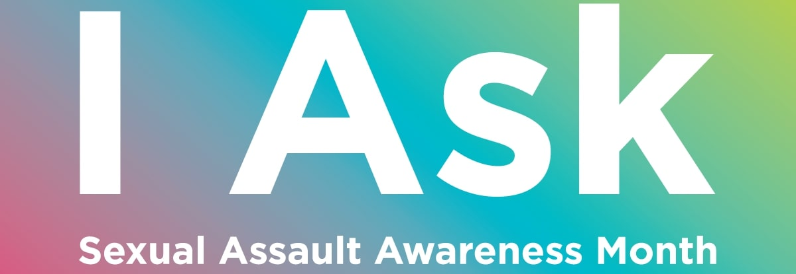
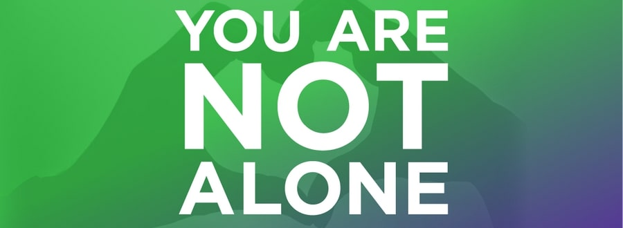

Sexual Assault Awareness Month
April 5, 2020 | Posted by Radhika Kedia 
April is Sexual Assault Awareness and Prevention Month (#SAAPM), and this year we’re focusing on the vital role that loved ones play in supporting survivors.
During #SAAPM, we ask individuals and communities across the country to engage with this issue that affects nearly every household in India by learning more about sexual violence, sharing important statistics and information, bringing together our community, volunteering, and donating. This year, we’ll have a special emphasis on how you can help virtually.
Mental Health Awareness Month
October 10, 2019 | Posted by Aryaman Sahay 
A mental illness is a physical illness of the brain that causes disturbances in thinking, behavior, energy or emotion that make it difficult to cope with the ordinary demands of life. Research is starting to uncover the complicated causes of these diseases which can include genetics, brain chemistry, brain structure, experiencing trauma and/or having another medical condition, like heart disease.
Although the general perception of mental illness has improved over the past decades, studies show that stigma against mental illness is still powerful, largely due to media stereotypes and lack of education, and that people tend to attach negative stigmas to mental health conditions at a far higher rate than to other diseases and disabilities, such as cancer, diabetes or heart disease.
Stigma affects not only the number seeking treatment, but also the number of resources available for proper treatment. Stigma and misinformation can feel like overwhelming obstacles for someone who is struggling with a mental health condition.